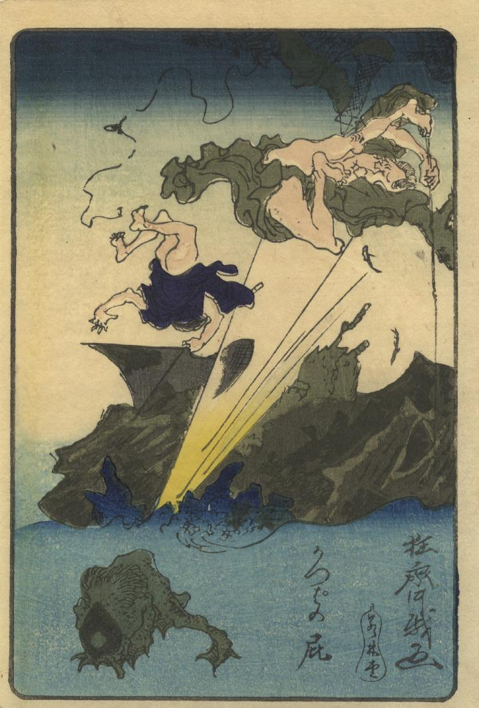

水中でうずくまり屁を放つ河童。丘の釣り人がそれに吹き飛ばされている。河童は全身緑色の鱗が生えている。頭には皿、手足には水掻きがみえる。
著作者：狂齊／出典：親書誌：U426_nichibunken_0305：かっぱの屁；カッパノヘ／日付：2014／資源識別子：U426_nichibunken_0305_0001_0000
Copyright (c)2010- International Research Center for Japanese Studies, Kyoto, Japan. All rights reserved.